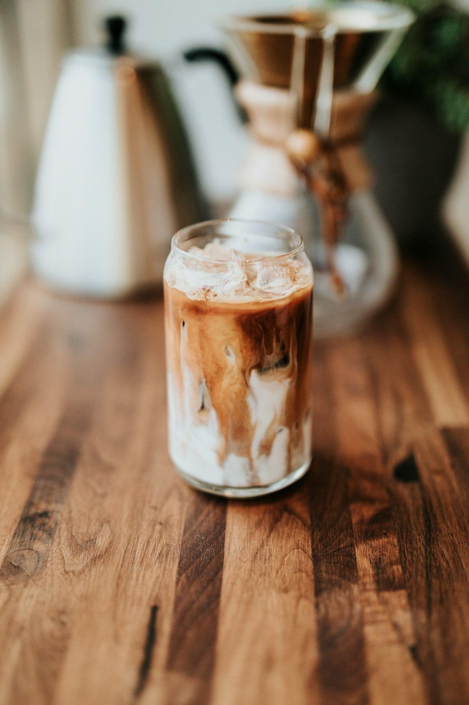

Blonde Craft Shaken
255 mg Caffeine
Iced Brown Sugar Oatmilk Shaken Espresso
Starbucks® Blonde espresso, brown sugar and cinnamon shaken together with ice, then crowned with creamy oatmilk for an uplifting, texturized balance.
Brown Sugar
Toasted Cinnamon
Creamy Oatmilk
$5.95 Grande 16oz